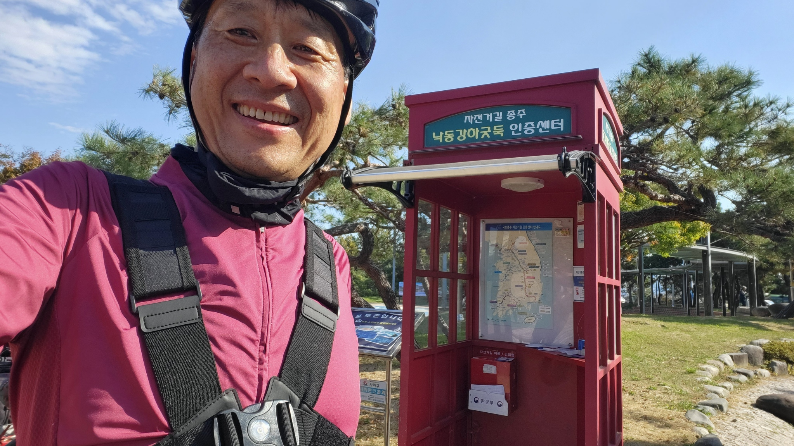
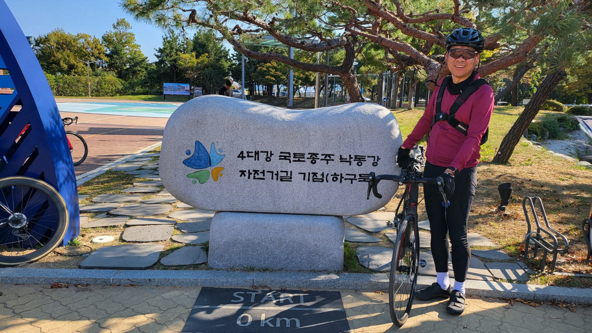

자전거길 코스
| 코스명 | 낙동강 자전거길(하류) / 낙단보-낙동강하구둑 |
| 코 스 | (낙동강의성휴게소(영천방면)) - 낙단보 - 구미보 - 칠곡보 - 강정고령보 - 달성보 - 합천창녕보 - 양산물문화관 - 낙동강하구둑 - (부산역(KTX)) |
| 교 통 |
가는일 : 서울고속버스터미널 - 낙동강의성휴게소(영천방면) 오는길 : 부산역(KTX) - 서울역(KTX) |
| 거 리 | 267km |
| 시 간 | 11시간 49분 |
| GPX 파일 | 낙동강 자전거길 GPX 다운로드 |
낙동강 자전거길(낙단보-낙동강하구둑) 코스(2022년 10월 21일~22일(1박2일))

|
|

|
|

|
|
|  | |

|
|
|  |
즐거운길에서 남기고 싶은말..
이제 이번코스만 완주를 하면 4대강, 국토종주 그랜드슬램을 달성한다.
오늘은 아침일찍 서울고속버스터미널에서 출발하기로 하고 터미널로 향했다. 제법 새벽공기도 쌀쌀하다. 새벽에 터미널에 도착하니 자전거족과의 경쟁이 아닌 화물과의 전쟁이 었다.
6시경 첫차는 서울에서 화원의 꽃을 화물칸에 싣고 가느라 자전거를 싣고 갈 공간이 부족하여 겨우 겨우 싣고 갈 수 있었다.
낙동강의성휴게소에서 하차를 하고 바로 낙단보로 향했고 첫날은 낙단보부터 시작하여 합천 창녕보까지 라이딩하였다.
가을이라 낙동강과 그너머의 단풍이 매우 아름다웠으며, 하늘의 구름도 매우 아름답게 보였다.
강가의 길에는 가끔씩 뱀도 나나타고 하여 조심조심 라이딩 하였으며, 대부분 평지라서 어렵지 않게 라이딩 할 수 있었다. 그러나 라이딩 도중 동료가 펑크가 나는 바람에 시간을 지체하였으며 펑크 수리시 소진한 튜브를 구매하느라 인근 현풍에 있는 라이딩샵에서 여분의 튜브를 구매하니 어느덧 어둠이 깔리기 시작하였다.
어둠을 뚫고 합천창녕보를 1km 남겨놓을 즈음 미리 예약해 놓은 숙소에서 날이 어두워 위험하다고 트럭을 이용 Pick-up해 주겠다고 하여 인증센터에서 인증을 하고 트럭을 타고 숙소로 올 수 있었다.
모텔 이름이 적교장 모텔 이었는데 모텔에서의 서비스가 Delivery 서비스 뿐만 아니라 세탁서비스, 자전거 보관서비스등 이제까지 받아보지 못하였던 서비스를 제공 하고 있었으며 숙도도 오래 되기는 하였지만 매우 깨끝히 관리하고 있어 다음에 지날때에도 꼭 여기에 숙박을 하여야 겠다고 생각할 정도였다.
둘째날 아침에 우리는 라이딩 전에 미리 검색한 업힐이 없는 코스인 공도를 이용하여 라이딩을 시작하였으며, 토요일이라 그런지 차도 거의 없고 공도 상태도 매우좋아 아주 쾌적안 라이딩을 즐길 수 있었다.
둘째날은 어제보다 날씨가 더 좋아 강 및 단풍든 산들이 매우 보기 좋았으며, 강가에는 많은 사람들이 캠핑 및 자리를 깔고 휴일을 즐기고 있었다.
한참을 라이딩 하다 쉬어가려고 잠시 멈추고 뒤를 보니 어디선가 많이 본 풍경이 눈앞에 펼쳐졌다. TV드라마인 "우영우 변호사"에서 보았던 팽나무와 언덕이 바로 뒤에 있어 깜짝 관광도 즐길 수 있었다.
우영우 팽나무를 지나서 일행은 마사터널을 지나 부산으로 내달렸고 양산물문화관을 지나 마지막 여정인 낙동강하구둑에 도착할 수 있었다.
낙동강 하구둑에 도착하여 인증센터가 300미터 200미터 가까워 올때마다 이제 전국일주의 종착점이라는 생각이 머릿속을 맴돌때마다 가슴이 벅차오름을 느낄 수 있었다.
목적지에 도착하고 나서 인증센터에서 인증을 하고 인증서 신청을 하고 기념사진을 찍으니 비로소 4대강, 국토종주 그랜드슬램을 달성한 골드 스티커가 인증 수첩에 붙여졌다.
그랜드슬램이라는 전국일주를 하면서 국토의 구석구석을 다니면서 자전거길에 대한 인프라를 보면서 우라나라도 선진국이구나 하는 생각을 많이 하였으며, 개인적으로는 건강에도 도움이 되어 여행과 건강을 동시에 챙긴 일석이조 라이딩 여행이 었다.
이로서 1차로 두바퀴로 가는 여행 전국일주를 마쳤고 내년은 2차로 "자출사의 633"에 도전을 해봐야 겠다.
1차 그랜드슬램 함께 해준 우리 직장동료 4명 633 또 시작합시다. !!